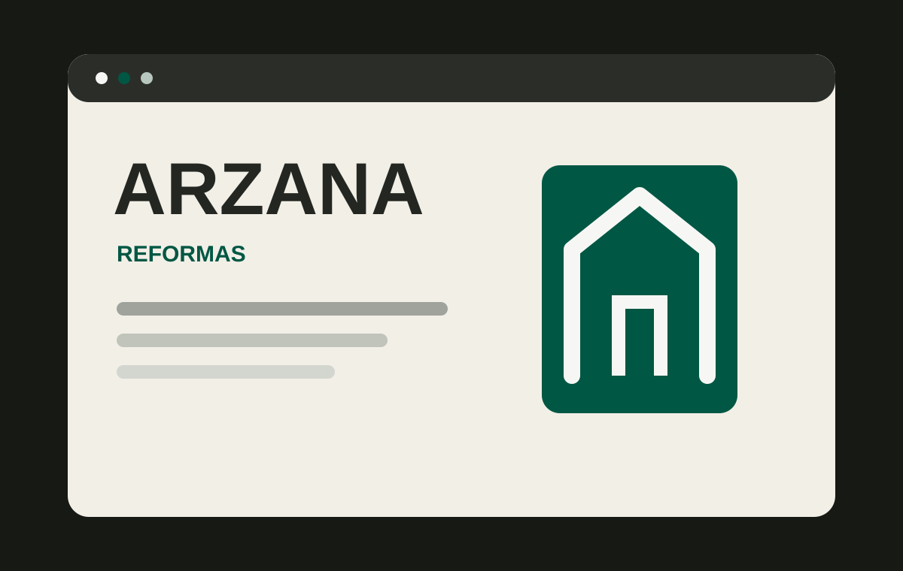

Servicios bien organizados
La oferta se presenta por bloques comprensibles para que el visitante identifique rápidamente lo que necesita.
WEB CORPORATIVA · REFORMAS
Una web corporativa pensada para convertir una oferta amplia de reformas en una experiencia clara, profesional y orientada a solicitar presupuesto.

EL RETO
Arzana Reformas trabaja con reformas integrales para viviendas, locales comerciales y empresas. Su oferta abarca trabajos como pladur, albañilería, pintura, electricidad y fontanería, por lo que la web necesitaba presentar muchos servicios sin convertir la navegación en una lista difícil de entender.
El enfoque fue construir una presencia corporativa que transmitiera confianza, explicara qué puede resolver la empresa y mantuviera visible el siguiente paso: solicitar un presupuesto.
LA SOLUCIÓN
La experiencia prioriza la lectura rápida y la toma de decisión: qué hace Arzana, por qué elegirla, cómo trabaja y cómo iniciar una reforma.
La oferta se presenta por bloques comprensibles para que el visitante identifique rápidamente lo que necesita.
Propuesta de valor, metodología y mensajes de acompañamiento ayudan a reducir dudas antes de solicitar presupuesto.
La metodología de trabajo muestra que la reforma se acompaña desde la definición inicial hasta la entrega.
Los llamados a solicitar presupuesto se integran de forma constante sin interrumpir la navegación.
UNA WEB PARA VENDER SERVICIOS
En una empresa de reformas el cliente necesita entender alcance, confianza y próximos pasos. La web de Arzana se plantea como una herramienta comercial para acompañar esa decisión.